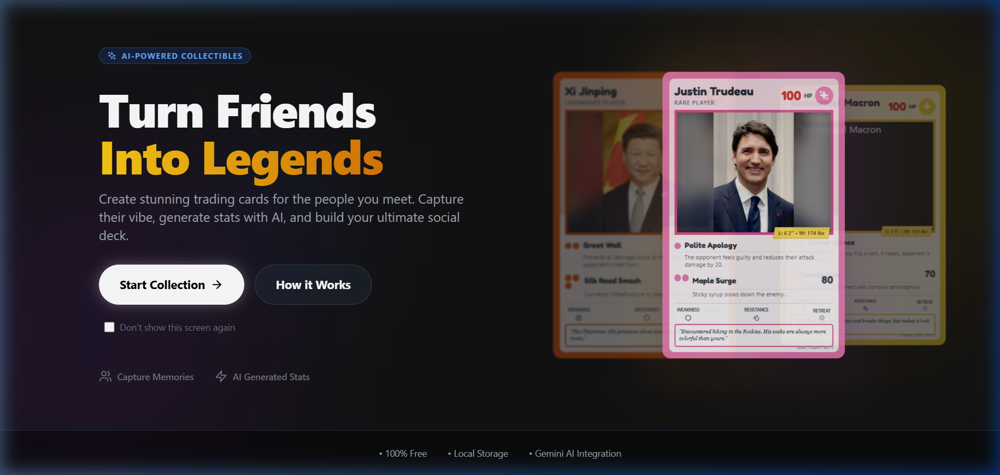
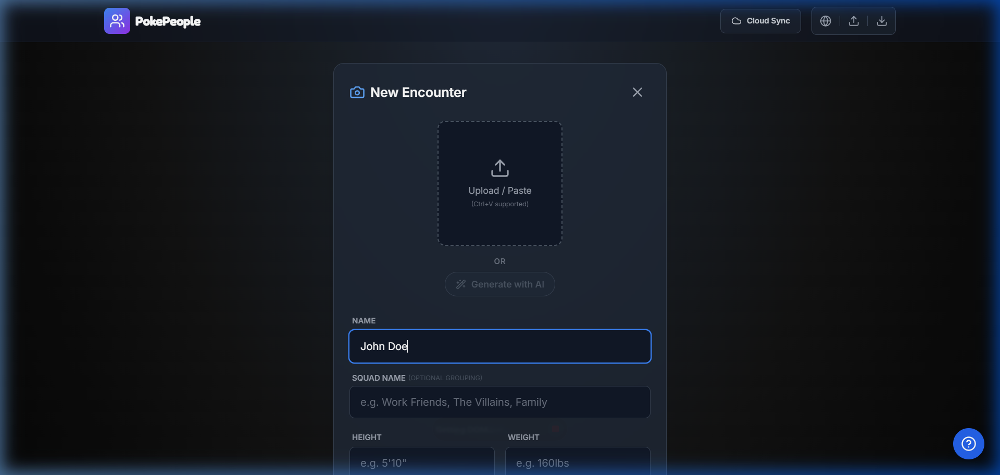

PokePeople
PokePeople is a fun, interactive web application that allows you to turn your friends into legendary trading cards.
By harnessing AI-powered generation, PokePeople captures their unique vibe, assigns battle stats, and lets you build an ultimate social deck. It is designed to be a fun, shareable experience that blends nostalgia with modern generative AI technology.
Screenshots


Features
- AI-Powered Cards: Generate custom trading cards with unique art and stats tailored by AI.
- Capture the Vibe: Turn any friend's persona into a legendary creature or character.
- Battle Stats: Each card comes with its own unique battle statistics, making them fun to compare.
- Build a Deck: Create multiple cards and curate your own ultimate social deck.
- 100% Free: Generate cards seamlessly right from your browser.